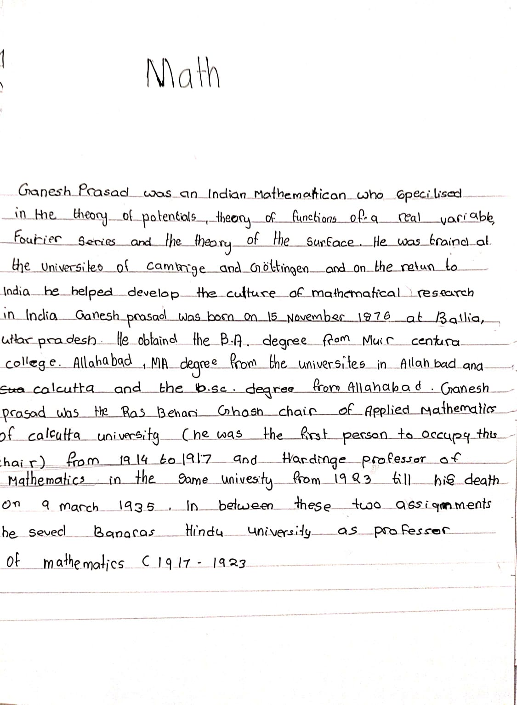

MATH PAGE

Math topic description:
Welcome to Math page
| MATH PAGE | |
|---|---|
|  | |
| Math topic description: |
Ganesh Prasad was an Indian mathematician who specialised in the theory of potentials, theory of functions of a real variable, Fourier series and the theory of surfaces. He was trained at the Universities of Cambridge and Göttingen and on return to India he helped develop the culture of mathematical research in India Ganesh Prasad was born on 15 November 1876 at Ballia, Uttar Pradesh. He obtained the B.A. degree from Muir Central College, Allahabad, M.A. degree from the Universities in Allahabad and Calcutta and the D.Sc. degree from Allahabad University. . Ganesh Prasad was the Ras Behari Ghosh Chair of Applied Mathematics of Calcutta University (he was the first person to occupy this Chair) from 1914 to 1917 and Hardinge Professor of Mathematics in the same University from 1923 till his death on 9 March 1935. In between these two assignments he served Banaras Hindu University as professor of mathematics (1917–1923). |